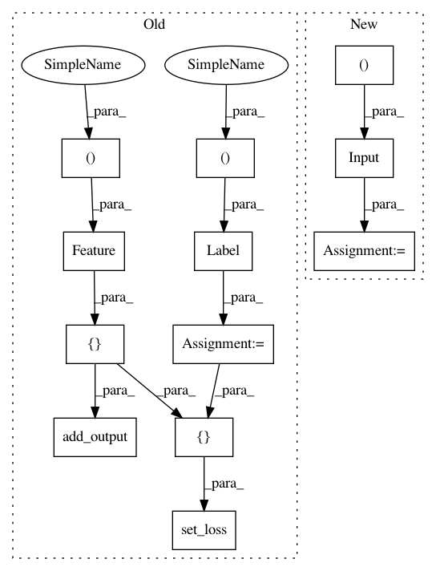

cb4ea667b426ebc6595cc0e8be81c94955266c9c,deepchem/utils/test/test_generator_evaluator.py,TestGeneratorEvaluator,test_compute_model_performance_singletask_classifier,#TestGeneratorEvaluator#,57
Before Change
y = np.concatenate((class_0, class_1))
dataset = NumpyDataset(X, y)
features = Feature(shape=(None, n_features))
label = Label(shape=(None, 2))
dense = Dense(out_channels=2, in_layers=[features])
output = SoftMax(in_layers=[dense])
smce = SoftMaxCrossEntropy(in_layers=[label, dense])
total_loss = ReduceMean(in_layers=smce)
tg = dc.models.TensorGraph(learning_rate=0.1)
tg.add_output(output)
tg.set_loss(total_loss)
tg.fit(dataset, nb_epoch=1000)
metric = dc.metrics.Metric(
dc.metrics.roc_auc_score, np.mean, mode="classification")
After Change
y = np.concatenate((class_0, class_1))
dataset = NumpyDataset(X, y)
features = layers.Input(shape=(n_features,))
dense = layers.Dense(2)(features)
output = layers.Softmax()(dense)
keras_model = tf.keras.Model(inputs=features, outputs=[output])
model = dc.models.KerasModel(
keras_model, dc.models.losses.SoftmaxCrossEntropy(), learning_rate=0.1)
In pattern: SUPERPATTERN
Frequency: 3
Non-data size: 12
Instances
Project Name: deepchem/deepchem
Commit Name: cb4ea667b426ebc6595cc0e8be81c94955266c9c
Time: 2020-03-05
Author: peastman@stanford.edu
File Name: deepchem/utils/test/test_generator_evaluator.py
Class Name: TestGeneratorEvaluator
Method Name: test_compute_model_performance_singletask_classifier
Project Name: deepchem/deepchem
Commit Name: cb4ea667b426ebc6595cc0e8be81c94955266c9c
Time: 2020-03-05
Author: peastman@stanford.edu
File Name: deepchem/utils/test/test_generator_evaluator.py
Class Name: TestGeneratorEvaluator
Method Name: test_compute_model_performance_multitask_classifier
Project Name: deepchem/deepchem
Commit Name: cb4ea667b426ebc6595cc0e8be81c94955266c9c
Time: 2020-03-05
Author: peastman@stanford.edu
File Name: deepchem/utils/test/test_generator_evaluator.py
Class Name: TestGeneratorEvaluator
Method Name: test_compute_model_performance_multitask_regressor